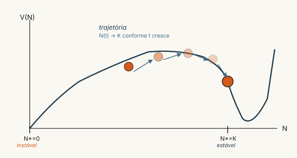
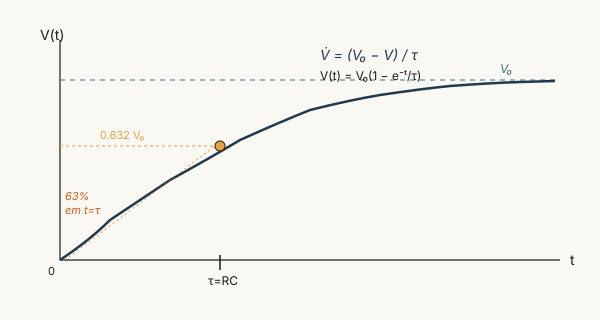
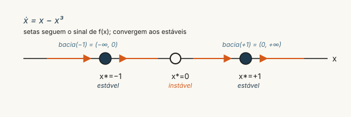

Fluxos em uma dimensão
Fase 1 — Capítulo 1 (Strogatz, caps. 1–2)
A pergunta operacional
A pergunta central da Fase 1 é geometricamente simples: dado um sistema autônomo de primeira ordem na reta, \(\dot{x} = f(x)\), com \(f\) suficientemente regular, o que é possível dizer sobre o comportamento de longo prazo de qualquer trajetória, sabendo apenas onde \(f\) se anula e qual é o sinal de \(f\) entre seus zeros? A resposta de Strogatz (2015) é desproporcional à modéstia da pergunta: para a dinâmica unidimensional autônoma, tudo o que importa está nos zeros de \(f\) (os pontos fixos) e na monotonicidade local de \(f\) em torno deles.
A razão é topológica. Em um espaço de estados unidimensional, uma trajetória é uma curva monótona até atingir um ponto fixo ou divergir; não há laços fechados, não há oscilações sustentadas, não há caos. Esse fato — que parece pobre — funda toda a Fase 1: é por ser pobre que é tratável, e tratabilidade é a condição para que possamos depois reintroduzir, ordenadamente, complexidade (acoplamento no capítulo 2, dois estados em F1-03, três estados e caos em F1-06).
Pontos fixos e estabilidade linear
Um ponto fixo \(x^*\) de \(\dot{x}=f(x)\) é um zero de \(f\), isto é, \(f(x^*)=0\). Iniciado em \(x^*\), o sistema permanece em \(x^*\) para todo \(t \geq 0\). A questão delicada é: iniciado próximo a \(x^*\), o sistema retorna ou se afasta?
A resposta é dada pela análise de estabilidade linear. Expandindo \(f\) em série de Taylor em torno de \(x^*\),
\[ \dot{x} \;=\; f(x^*) + f'(x^*)(x-x^*) + O\big((x-x^*)^2\big) \;=\; f'(x^*)\,\eta + O(\eta^2), \]
com \(\eta := x - x^*\), e desprezando os termos de ordem superior, obtém-se a equação linear \(\dot{\eta} = f'(x^*)\,\eta\), cuja solução é exponencial: \(\eta(t) = \eta(0)\,e^{f'(x^*)t}\). Daí o critério:
\[ \boxed{\;f'(x^*) < 0 \;\Rightarrow\; x^*\text{ estável};\qquad f'(x^*) > 0 \;\Rightarrow\; x^*\text{ instável}.\;} \tag{1}\]
O caso \(f'(x^*)=0\) é degenerado e exige análise não-linear: examinar termos seguintes da série de Taylor, ou usar o potencial \(V(x)\) apresentado abaixo. Geometricamente, o critério (Equação 1) traduz uma intuição imediata sobre o gráfico de \(f\): se \(f\) cruza o eixo \(x\) descendo no zero \(x^*\), então \(f\) é positiva à esquerda (sistema vai para a direita) e negativa à direita (sistema vai para a esquerda) — atrai. Se \(f\) cruza subindo, repele. Toda a estabilidade local de sistemas 1D autônomos cabe nessa observação visual.
Existência e unicidade (Picard)
Antes de tratar comportamento de longo prazo, é prudente garantir que as soluções existem e são únicas. O teorema de Picard-Lindelöf estabelece que, se \(f\) é Lipschitz contínua em uma vizinhança de \(x_0\), o problema de Cauchy
\[ \dot{x} = f(x), \qquad x(t_0) = x_0, \]
admite solução única em algum intervalo de tempo aberto contendo \(t_0\). Lipschitz continuidade vale, em particular, sempre que \(f\) é continuamente diferenciável (\(C^1\)) — condição satisfeita pelos exemplos do curso. A consequência operacional é forte: trajetórias não se cruzam. Em 1D, isso já força o comportamento monótono mencionado acima — duas trajetórias que se cruzassem violariam a unicidade de Picard. É deste fato topológico, não de algum cálculo explícito, que decorre a impossibilidade de oscilação em sistemas 1D autônomos.
O potencial \(V(x)\) e a interpretação energética
A função
\[ V(x) := -\int^x f(s)\,ds \]
define um potencial fictício sobre o espaço de estados. Pela definição, \(\dot{x} = f(x) = -V'(x)\), ou seja, o sistema desce o gradiente de \(V\). Ao longo de uma trajetória,
\[ \frac{dV}{dt} = V'(x)\dot{x} = -[f(x)]^2 \leq 0, \]
igual a zero apenas nos pontos fixos. Conclusão: \(V\) é monotonamente não-crescente ao longo de qualquer trajetória, e o sistema converge para um mínimo local de \(V\). Pontos fixos estáveis correspondem a mínimos locais; instáveis, a máximos; degenerados, a pontos de inflexão. A “bacia de atração” do dinamicismo é literalmente uma bacia do potencial — etimologia que Ashby explora sem cerimônia em Ashby (1956).

Exemplo 1: modelo logístico (Verhulst)
\[ \dot{N} = r\,N\!\left(1 - \frac{N}{K}\right), \qquad r,K > 0. \]
Pontos fixos: \(N^* = 0\) e \(N^* = K\). Avaliando \(f'(N) = r - 2rN/K\): em \(N=0\), \(f'(0) = r > 0\) (instável); em \(N = K\), \(f'(K) = -r < 0\) (estável). A bacia de atração de \(K\) é \((0, \infty)\). Para \(N(0) > 0\), o tempo característico de aproximação a \(K\) é \(\sim 1/r\). O modelo, originalmente proposto por Verhulst (1838) para população humana e usado canonicamente em ecologia, é a face matemática mínima do conceito de capacidade de carga: o sistema cresce exponencialmente quando longe do limite, e satura assintoticamente quando se aproxima.
Exemplo 2: carregamento RC
\[ \dot{V} = \frac{V_0 - V}{\tau}, \qquad \tau = RC. \]
Único ponto fixo \(V^* = V_0\), com \(f'(V^*) = -1/\tau < 0\) (globalmente estável). Solução explícita: \(V(t) = V_0 + (V(0) - V_0)\,e^{-t/\tau}\). O tempo característico \(\tau\) é, simultaneamente, o inverso da derivada — coincidência não-acidental: \(|f'(x^*)|^{-1}\) é o tempo de meia-vida local da perturbação, em qualquer sistema 1D autônomo, no regime linear.

Exemplo 3: conta de polo UAB-UNITINS (aplicação institucional)
Considere o estado \(S(t)\) = número de estudantes ativos em um polo da UAB-UNITINS num dado instante. Em modelagem agregada de Sterman (capítulo F3-01), o balanço aproxima-se por
\[ \dot{S} = i(t) - \frac{S}{\tau_{\text{permanência}}}, \]
onde \(i(t)\) é o fluxo de novas matrículas e \(\tau_{\text{permanência}}\) é o tempo médio que um estudante permanece ativo (até concluir, evadir ou jubilar-se). Em regime estacionário com \(i\) constante, há ponto fixo \(S^* = i\,\tau_{\text{permanência}}\), estável com tempo característico \(\tau_{\text{permanência}}\). Esta é a forma RC aplicada à demografia institucional. O ganho da abordagem cibernética: \(S^*\) é insensível à amplitude de variações de curto prazo em \(i\) — o sistema filtra distúrbios com banda passante \(1/\tau\). Para Joana (vide Personagem), comparar polos UAB-UNITINS de Augustinópolis e Dianópolis pelo \(\tau\) estimado é primeiro passo de diagnóstico: polos com \(\tau\) pequeno (alta evasão) e polos com \(\tau\) grande (baixa rotatividade) operam em regimes dinâmicos qualitativamente diferentes.
Conexão com Ashby/Beer
Em linguagem cibernética, um ponto fixo estável é a definição rigorosa de homeostase: estado para o qual o sistema retorna após perturbações pequenas. A bacia de atração delimita o conjunto de distúrbios que o sistema absorve sem mudar de regime — uma instância concreta da entropia \(H(D)\) que aparecerá em F4-01. O critério \(|f'(x^*)|\) mede a taxa de absorção; a recíproca, \(1/|f'(x^*)|\), mede o tempo de absorção. Em VSM (capítulo F4-01), esse tempo característico é o que limita a banda passante de S2 (antioscilação) e S3 (alocação aqui-agora): se um distúrbio chega mais rápido do que \(\tau = 1/|f'|\), o regulador simplesmente não tem tempo de responder. A Lei da Variedade Requisita (?@eq-ashby-mult) tem aqui sua versão dinâmica: variedade não basta — é preciso variedade no tempo certo.
A diferença entre “regulador com variedade requisita” e “regulador rápido o suficiente” é o que separa o desenho institucional bom no papel do desenho institucional que funciona na prática. F2 (Markov) dá o aparato formal para essa segunda exigência via tempo de mistura.
Pergunta de verificação

Para o sistema \(\dot{x} = x - x^3\):
- Encontre todos os pontos fixos. (Três; Figura 3 antecipa.)
- Classifique cada um via Equação 1.
- Verifique o retrato de fase contra Figura 3.
- Identifique a bacia de atração de cada ponto fixo estável.
- Calcule o potencial \(V(x)\) e confirme que pontos fixos estáveis são mínimos locais; descreva a forma do gráfico de \(V\).
- Em linguagem cibernética: qual o “regulador implícito” e qual sua “variedade requisita”?
Para fixar: quando terminar, importe o deck Anki (vide revisão) — os cartões strogatz fase1 cobrem precisamente os conceitos deste capítulo.
Se você está estudando Joana como caso (Personagem): proponha um indicador acadêmico real de polo UAB-UNITINS ou disciplina UNIFAL-MG cujo comportamento agregado se aproxime de um sistema 1D autônomo. Estime visualmente os pontos fixos a partir de séries históricas e classifique-os.